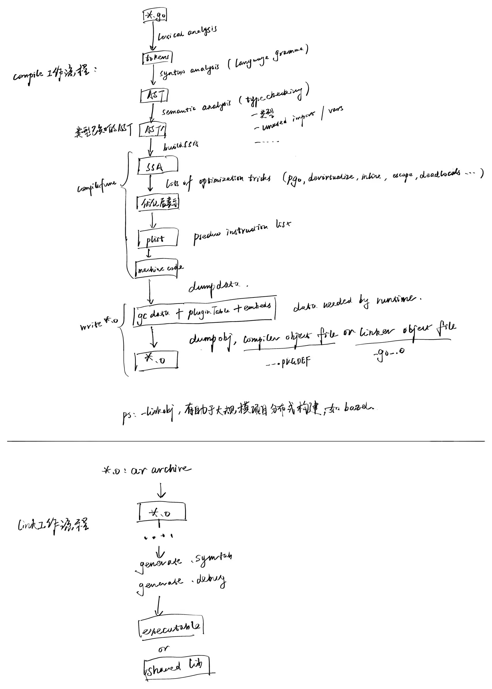

Symbol Tables and Symbols
In the "Understanding ELF Files" section, we introduced some common sections in ELF files and their purposes. In this section, we will focus on symbol tables and symbols.
Generation Process
Although this knowledge is very valuable, it might still feel a bit dry. OK, let's change our approach. Instead of starting with the dry symbol table format and symbol type definitions, let's first look at how symbol tables are generated in the Go compilation toolchain.
Go compiler's specific work:
- Takes Go source files as input,
- Reads the source files for lexical analysis to get a series of tokens,
- Performs syntax analysis (reduction based on grammar) to get AST,
- Performs type checking based on AST,
- After type checking passes, starts function compilation (buildssa, code optimization, generating plist, converting to platform-specific machine code),
- Finally outputs the results to object files.
The .o files here are actually ar files (can be verified with `file \.o), not the ELF format commonly used when gcc generates *.o files. This implementation approach was borrowed by the Go team from the Plan 9 project's object file format. Each compilation unit's corresponding *.o file includes two parts: one is the compiler object file, and one is the linker object file (can be seen throughar -t *.owhich shows the internal.PKGDEFfile andgo__.ofile).-linkobj=???`, for distributed builds to speed up compilation, you can specify to only output the compiler object file or linker object file, such as using bazel for distributed builds to accelerate compilation.
The compiler also records some symbol information in the output object file that will be processed by the Linker later. This symbol information is actually a list of LSyms. During the type checking process, the compiler maintains such a list and outputs it to the object file.
// An LSym is the sort of symbol that is written to an object file.
// It represents Go symbols in a flat pkg+"."+name namespace.
type LSym struct {
Name string
Type objabi.SymKind
Attribute
Size int64
Gotype *LSym
P []byte
R []Reloc
Extra *interface{} // *FuncInfo, *VarInfo, *FileInfo, or *TypeInfo, if present
Pkg string
PkgIdx int32 // <<<=== look, package name information is also recorded here
SymIdx int32
}
From the source code perspective, these LSym symbol information are actually various pkg.name (such as variables, constants, types, aliases, values, definition locations, instruction data) recognized during the compiler's processing. If a symbol's type is symbol.Type=SDWARFXXX, it indicates this is a debug symbol that the linker needs to recognize and process.
Go linker's specific work:
- Besides merging identical sections from multiple object files (input may also include other shared libraries, we won't expand on this here),
- The linker also needs to complete symbol resolution and relocation,
- Gradually builds a global symbol table, which is finally written to the .symtab symbol table in the build product for subsequent secondary linking, such as when the product is a shared library,
- The linker can perform some global-level optimizations, such as dead code removal, see: Dead Code Elimination: A Linker's Perspective, etc.,
- Generates DWARF debug information,
- Generates the final executable program or shared library,
OK, let's not diverge too much here... After the compiler writes the LSym list to the object file, the Linker needs to read it out and use it to complete symbol resolution and relocation related work. Some exported functions across compilation units will be finally output to the .symtab symbol table for future linking. In addition, for those symbols with LSym.Type=SDWARFXXX, the linker needs to generate corresponding DWARF DIE description information according to the DWARF standard and debugger developer agreement, and write it to .debug_* sections for subsequent debugger reading.
When designing and implementing, the Go team did not directly use the ELF format as the object file format for better optimization, but instead adopted a custom format borrowed from the Plan 9 object file format. Therefore, object files generated by go tool compile cannot be directly read by tools like readelf, nm, objdump like object files generated by gcc compilation. Although the Go team has not published detailed documentation describing this object file format, the Go compilation toolchain provides tools like go tool nm, go tool objdump to view data in these object files.
For better understanding, I've drawn the following sketch, including the working process of go tool compile and key steps of go tool link related to symbol information generation. If you want to check the source code, you can refer to this process for reading.

OK, we've introduced the collaboration between the compiler and linker, and the process of finally generating symbol tables and DWARF debug information in executable programs or shared libraries. Here we use the Go compilation toolchain as an example, also to let everyone learn more about Go. Other language compilation toolchains' processing flows, object file formats, etc. have differences, but overall they are similar. We won't continue diverging. Interested readers can search for corresponding materials with this framework. OK, let's introduce the content about symbol tables and symbols, so readers will have a more comprehensive understanding.
Understanding Symbol Tables
1) The symbol table .symtab stores a series of symbols, each symbol describing its address, type, scope and other information, used to help the linker complete symbol resolution and relocation related work. Of course, as mentioned earlier, debuggers can also use it.
Regarding symbol tables, each relocatable module has its own symbol table:
- *.o files contain a symbol table .symtab;
- .a files are static shared library files that may contain multiple .o files, and each .o file independently retains its own symbol table (.symtab). During static linking, the corresponding .o files are taken out for linking, and the symbol tables are merged during linking;
- .so files contain a dynamic symbol table .dynsym. All symbol table information from .o files merged into this .so file is merged into this .dynsym. Unlike static libraries, .so files no longer contain independent .o files. When the linker combines these .o files into a *.so file, it's Merging Not Inclusion;
- Other uncommon relocatable file types, we won't expand on these;
2) Symbol, each entry in the symbol table .symtab describes a symbol, and the symbol's name is finally recorded in the string table .strtab. Besides having a name, symbols have other attributes, which we'll continue to introduce.
3) String tables .strtab and .shstrtab store string information. .shstrtab and .strtab each have a 1-byte '\0' at the beginning and end, and other data are c_strings ending with '\0'. The difference is that .strtab can be used to store symbol and section names, while .shstrtab only stores section names.
If we dig deeper into the design implementation, the Go compiler builds an AST during compilation, and it knows the relevant information of any symbol package.name in the source code. On this basis, it records an LSym list and outputs it to the object file for further processing by the linker. After reading and processing, the linker will generate DWARF debug information for LSyms of debug type. We will introduce DWARF debug information in Chapter 8. Other global symbols used for symbol resolution and relocation are recorded in the .symtab of the final executable program or shared library for subsequent linking processes. This .symtab is a series of debug/elf.Sym32 or Sym64, and debug/elf.Symbol is a more convenient way to use after successful parsing, for example, the symbol name has been converted from the string index value in Sym32/64 to string type.
Understanding Symbols
The symbol table .symtab contains a series of symbols describing functions and variables in the global scope of the program and other information needed by the linker, such as the symbol's address and type. Automatic variables are usually not included in the symbol table because their scope is limited to the function or block where they are defined, and they don't need global visibility. However, static local variables are included in the symbol table. Although they don't have global namespace access rights, they have file scope, especially in multi-level nested code where internal nesting may reference static local variables defined in external blocks. The linker still relies on the existence of corresponding description information in the symbol table when performing symbol resolution.
The ELF symbol table mainly records objects with external scope, including:
- Global functions and global variables
- Static functions and static variables (only visible to the current source file or compilation unit)
- And other symbols that need to be accessed across files or modules
The symbols we're talking about here refer to entries in .symtab, not DWARF debug information. They are mainly recorded to facilitate the linker's symbol resolution and relocation. But these symbol information are indeed used by some debuggers, especially before debugging information standards like DWARF became industry standards. In fact, dlv doesn't use .symtab at all, but gdb does, which we've introduced in the extended reading section.
Remember our original intention, "to let everyone understand how those high-level designs coordinate the work of compiler, linker, loader, and debugger." Readers might as well boldly ask more whys? Not many people can claim to be proficient in these without doing some research.
- How is .symtab generated during compilation and building? This article has introduced it
- What role does .symtab play in linking and loading? Symbol resolution and relocation during linking
- Why keep .symtab in build products? Symbol resolution and relocation during linking, debugging, etc.
- Does deleting it affect debuggers like gdb and dlv? Affects gdb, probably not dlv
- Does deleting it from shared libraries affect the building of programs that depend on it? Linking fails during linking
- Does deleting it from shared libraries affect the running of programs that depend on it? Dynamic linking fails during loading
- Why does gdb need DWARF when early implementations could use .symtab? DWARF standard is superior, but became an industry standard later
- Why doesn't gdb abandon .symtab and completely rely on DWARF now? Compatibility with old binaries and toolchains
Our learning process shouldn't be fast food style, but should be down-to-earth. Every moment we face our inner questions is undoubtedly a strong stimulant that helps us break through and go further.
Symbol Definition
Below are the type definitions for 32-bit and 64-bit version symbols listed in man 5 elf. They have the same members, just different field list definition orders.
typedef struct {
uint32_t st_name;
Elf32_Addr st_value;
uint32_t st_size;
unsigned char st_info;
unsigned char st_other;
uint16_t st_shndx;
} Elf32_Sym;
typedef struct {
uint32_t st_name;
unsigned char st_info;
unsigned char st_other;
uint16_t st_shndx;
Elf64_Addr st_value;
uint64_t st_size;
} Elf64_Sym;
Let's understand the role of each field in detail:
- st_name: The name of the symbol, an index value into the string table. Non-zero indicates an index value in .strtab; 0 indicates the symbol has no name (.strtab[0]=='\0')
- st_value: The value of the symbol. For relocatable modules, value is the offset relative to the location where the symbol is defined; for executable files, this value is a virtual memory address;
- st_size: The size of the object pointed to by the symbol, 0 if the size is unknown or doesn't need to be specified. For example, the byte count of an int variable corresponding to the symbol;
- st_info: The type and binding attributes of the symbol
- STT_NOTYPE: Type not specified
- STT_OBJECT: The symbol is associated with a data object
- STT_FUNC: The symbol is associated with a function
- STT_SECTION: The symbol is associated with a section
- STT_FILE: The symbol is associated with the original file name of an object file
- STT_LOPROC, STT_HIPROC: Range [STT_LOPROC, STT_HIPROC] reserved for processor-specific mechanisms
- STB_LOCAL: Symbol visibility limited to the current compilation unit (object file) internal, multiple compilation units can have multiple symbols with the same name but of STT_LOCAL type
- STB_GLOBAL: Global symbols visible to all compilation units (object files), global symbols defined in one compilation unit can be referenced in another compilation unit
- STB_WEAK: Weak symbols, simulating global symbols, but their definitions have lower priority
- STB_LOPROC, STB_HIPROC: Range [STB_LOPROC, STB_HIPROC] reserved for processor-specific mechanisms
- STT_TLS: The symbol is associated with a TLS variable
- st_other: Defines the visibility of the symbol
- STV_DEFAULT: Default visibility rules; global symbols and weak symbols visible to other modules; references in local modules can resolve to definitions in other modules;
- STV_INTERNAL: Processor-specific hidden type;
- STV_HIDDEN: Symbol not visible to other modules; references in local modules can only resolve to symbols in the current module;
- st_shndx: Each symbol is defined in some section, such as variable names, function names, constant names, etc. This indicates the index of its section header in the section header table;
Reading Symbol Tables
The definition of ELF32 Symbol in the Go standard library debug/elf.Sym32/64 is as follows. Go doesn't have bit fields, so the definition is slightly different, but the understanding is the same:
// ELF32 Symbol.
type Sym32 struct {
Name uint32
Value uint32
Size uint32
Info uint8 // type:4+binding:4
Other uint8 // reserved
Shndx uint16 // section
}
For how to read symbol tables, you can refer to the Go source code implementation: https://sourcegraph.com/github.com/golang/go/-/blob/src/debug/elf/file.go?L489:16.
Now the Go toolchain supports reading symbol tables, and it's recommended to use the Go toolchain first. Linux binutils also provides some similar tools, but for Go programs, there are some special points:
- For compiled and linked executable programs, readelf -s, nm, objdump can all be used;
- But for Go object files, since Go uses a custom object file format, you can only use go tool nm, go tool objdump to view them.
It might be more convenient to use the type debug/elf.Symbol, and it also supports reading the dynamic symbol table .dynsym.
// A Symbol represents an entry in an ELF symbol table section.
type Symbol struct {
Name string
Info, Other byte
// HasVersion reports whether the symbol has any version information.
// This will only be true for the dynamic symbol table.
HasVersion bool
// VersionIndex is the symbol's version index.
// Use the methods of the [VersionIndex] type to access it.
// This field is only meaningful if HasVersion is true.
VersionIndex VersionIndex
Section SectionIndex
Value, Size uint64
// These fields are present only for the dynamic symbol table.
Version string
Library string
}
Next, let's expand on how to use these tools and understand their output information.
Tool Demonstration
After reading the symbol type definitions, you must have many associations, "what should a variable name's symbol look like", "what should a function name's symbol look like", "what about constant names...". OK, we'll show you what symbols corresponding to different program constructs look like with specific examples.
Code example as follows, file: main.go
package main
import "fmt"
func main() {
fmt.Println("vim-go")
}
List All Symbols
readelf -s <prog> can display all symbol lists in program prog, for example:
$ readelf -s main
Symbol table '.symtab' contains 1991 entries:
Num: Value Size Type Bind Vis Ndx Name
0: 0000000000000000 0 NOTYPE LOCAL DEFAULT UND
1: 0000000000000000 0 FILE LOCAL DEFAULT ABS go.go
2: 0000000000401000 0 FUNC LOCAL DEFAULT 1 runtime.text
3: 0000000000402d00 557 FUNC LOCAL DEFAULT 1 cmpbody
4: 0000000000402f50 339 FUNC LOCAL DEFAULT 1 memeqbody
5: 0000000000403100 297 FUNC LOCAL DEFAULT 1 indexbytebody
6: 000000000045f5c0 64 FUNC LOCAL DEFAULT 1 gogo
7: 000000000045f600 43 FUNC LOCAL DEFAULT 1 callRet
8: 000000000045f640 47 FUNC LOCAL DEFAULT 1 gosave_systemsta[...]
9: 000000000045f680 13 FUNC LOCAL DEFAULT 1 setg_gcc
10: 000000000045f690 1380 FUNC LOCAL DEFAULT 1 aeshashbody
11: 000000000045fc00 205 FUNC LOCAL DEFAULT 1 gcWriteBarrier
...
View Symbol Dependency Graph
In the example, the package name main, function name main.main, imported external package name fmt, and referenced external function fmt.Println all belong to the category of symbols.
Is "vim-go" a symbol? It itself is read-only data stored in the .rodata section. It's not a symbol itself, but can be referenced by symbols. For example, if you define a global variable var s = "vim-go", then variable s has a corresponding symbol, its symbol name is s, and the variable value references vim-go from .rodata.
We can verify this with readelf --hex-dump .rodata | grep vim-go. In the above example, a temporary variable is actually generated, and the value of this temporary variable is "vim_go". To view the symbol dependency graph, you can verify with go tool link --dumpdep main.o | grep main.main, or go build -ldflags "--dumpdep" main.go | grep main.main also works.
$ go build -ldflags "--dumpdep" main.go 2>&1 | grep main.main
runtime.main_main·f -> main.main
main.main -> main..stmp_0
main.main -> go.itab.*os.File,io.Writer
main.main -> fmt.Fprintln
main.main -> gclocals·8658ec02c587fb17d31955e2d572c2ff
main.main -> main.main.stkobj
main..stmp_0 -> go.string."vim-go"
main.main.stkobj -> type.[1]interface {}
We can see that a temporary variable main..stmp_0 is generated, which references go.string."vim-go" and is used as a parameter for fmt.Println.
View Symbol Table & Symbols
The example code remains unchanged, let's introduce how to quickly view symbol & symbol table information:
go build -o main main.go compiles into a complete program, then you can analyze the symbol list contained in program main through readelf, nm, objdump, etc. Although our example code is simple, because the Go runtime is very large, it will introduce many symbols.
We can consider only compiling the main.go compilation unit, go tool compile main.go will output a file main.o. Here main.o is a relocatable object file, but its file format cannot be analyzed by readelf, nm because it's an object file format designed by Go itself, mentioned in proposal: build a better linker. To analyze main.o, you can only use tools provided by Go.
You can use go tool nm to view symbol information defined in main.o:
$ go tool compile main.go
$ go tool nm main.o
U
U ""..stmp_0
1477 ? %22%22..inittask
1497 R %22%22..stmp_0
13ed T %22%22.main
14a7 R %22%22.main.stkobj
U fmt..inittask
U fmt.Fprintln
17af R gclocals·33cdeccccebe80329f1fdbee7f5874cb
17a6 R gclocals·d4dc2f11db048877dbc0f60a22b4adb3
17b7 R gclocals·f207267fbf96a0178e8758c6e3e0ce28
1585 ? go.cuinfo.packagename.
U go.info.[]interface {}
U go.info.error
1589 ? go.info.fmt.Println$abstract
U go.info.int
1778 R go.itab.*os.File,io.Writer
1798 R go.itablink.*os.File,io.Writer
15b3 R go.string."vim-go"
U os.(*File).Write
156b T os.(*File).close
U os.(*file).close
U os.Stdout
....
go tool nm and nm provided by Linux binutils, although supporting different object file formats, have the same output format. Looking at the man manual, we learn:
- First column, symbol value, indicates the virtual address where the symbol is defined (such as the variable address corresponding to the variable name);
Second column, symbol type, lowercase letters indicate local symbols, uppercase indicates global symbols (uvw exceptions);
Run command
man nmto view nm output information:"A" The symbol's value is absolute, and will not be changed by further linking. "B" "b" The symbol is in the uninitialized data section (known as BSS). "C" The symbol is common. Common symbols are uninitialized data. When linking, multiple common symbols may appear with the same name. If the symbol is defined anywhere, the common symbols are treated as undefined references. "D" "d" The symbol is in the initialized data section. "G" "g" The symbol is in an initialized data section for small objects. Some object file formats permit more efficient access to small data objects, such as a global int variable as opposed to a large global array. "i" For PE format files this indicates that the symbol is in a section specific to the implementation of DLLs. For ELF format files this indicates that the symbol is an indirect function. This is a GNU extension to the standard set of ELF symbol types. It indicates a symbol which if referenced by a relocation does not evaluate to its address, but instead must be invoked at runtime. The runtime execution will then return the value to be used in the relocation. "I" The symbol is an indirect reference to another symbol. "N" The symbol is a debugging symbol. "p" The symbols is in a stack unwind section. "R" "r" The symbol is in a read only data section. "S" "s" The symbol is in an uninitialized data section for small objects. "T" "t" The symbol is in the text (code) section. "U" The symbol is undefined. "u" The symbol is a unique global symbol. This is a GNU extension to the standard set of ELF symbol bindings. For such a symbol the dynamic linker will make sure that in the entire process there is just one symbol with this name and type in use. "V" "v" The symbol is a weak object. When a weak defined symbol is linked with a normal defined symbol, the normal defined symbol is used with no error. When a weak undefined symbol is linked and the symbol is not defined, the value of the weak symbol becomes zero with no error. On some systems, uppercase indicates that a default value has been specified. "W" "w" The symbol is a weak symbol that has not been specifically tagged as a weak object symbol. When a weak defined symbol is linked with a normal defined symbol, the normal defined symbol is used with no error. When a weak undefined symbol is linked and the symbol is not defined, the value of the symbol is determined in a system-specific manner without error. On some systems, uppercase indicates that a default value has been specified. "-" The symbol is a stabs symbol in an a.out object file. In this case, the next values printed are the stabs other field, the stabs desc field, and the stab type. Stabs symbols are used to hold debugging information. "?" The symbol type is unknown, or object file format specific.- Third column, symbol name, the symbol name's index in the string table, corresponding to the string stored in the string table;
Let's look back at our example to deepen our understanding. OK, let's focus on the main function itself. We notice that nm output shows the symbol %22%22.main is defined at virtual address 0x13ed, and indicates it's a symbol defined in the .text section. There's only one possibility, either package main or func main.main, actually it's main.main.
$ go tool nm main.o
U
U ""..stmp_0
1477 ? %22%22..inittask
1497 R %22%22..stmp_0
13ed T %22%22.main
14a7 R %22%22.main.stkobj
U fmt..inittask
U fmt.Fprintln
....
We can verify this by using go tool objdump -S main.o to disassemble main.o and look at the information at the virtual address. We notice that virtual address 0x13ed is exactly the entry address of func main.main.
$ go tool objdump -S main.o
TEXT %22%22.main(SB) gofile../root/debugger101/testdata/xxxx/main.go
func main() {
0x13ed 64488b0c2500000000 MOVQ FS:0, CX [5:9]R_TLS_LE
0x13f6 483b6110 CMPQ 0x10(CX), SP
0x13fa 7671 JBE 0x146d
0x13fc 4883ec58 SUBQ $0x58, SP
0x1400 48896c2450 MOVQ BP, 0x50(SP)
0x1405 488d6c2450 LEAQ 0x50(SP), BP
fmt.Println("vim-go")
0x140a 0f57c0 XORPS X0, X0
0x140d 0f11442440 MOVUPS X0, 0x40(SP)
0x1412 488d0500000000 LEAQ 0(IP), AX [3:7]R_PCREL:type.string
......
Also, we notice that many symbols in the example have type U, these are symbols undefined in the current module main.o. These symbols are defined in other modules and will need the linker to resolve these symbols and complete relocation.
In the how-go-build-works section we introduced importcfg.link, remember? Go program building depends on the standard library and runtime, and needs to be linked with these.
Earlier we mentioned that in relocatable files, there are some .rel.text, .rel.data sections to implement relocation, but we also mentioned that Go object files are custom, they reference the Plan 9 object file format (of course now it's adjusted with go tool link --go115newobj), and Linux binutils' readelf tool cannot read them. Go provides the objdump tool to view them.
$ go tool objdump main.o | grep R_
main.go:5 0x13ed 64488b0c2500000000 MOVQ FS:0, CX [5:9]R_TLS_LE
main.go:6 0x1412 488d0500000000 LEAQ 0(IP), AX [3:7]R_PCREL:type.string
main.go:6 0x141e 488d0500000000 LEAQ 0(IP), AX [3:7]R_PCREL:""..stmp_0
print.go:274 0x142a 488b0500000000 MOVQ 0(IP), AX [3:7]R_PCREL:os.Stdout
print.go:274 0x1431 488d0d00000000 LEAQ 0(IP), CX [3:7]R_PCREL:go.itab.*os.File,io.Writer
print.go:274 0x145d e800000000 CALL 0x1462 [1:5]R_CALL:fmt.Fprintln
main.go:5 0x146d e800000000 CALL 0x1472 [1:5]R_CALL:runtime.morestack_noctxt
gofile..<autogenerated>:1 0x1580 e900000000 JMP 0x1585 [1:5]R_CALL:os.(*file).close
We use grep R_ to filter objdump's output. Now we see these operation instructions, each involving some symbols that need relocation, such as type definition type.string, global variable os.Stdout, global functions fmt.Fprintln, os.(*file).close.
ps: In Plan 9, assembly instructions R_PCREL, R_CALL indicate that relocation is needed here, we'll introduce this later.
These symbols will be resolved and relocated during subsequent go tool link, finally building a fully linked executable program. You can try running go tool link main.o, it will generate an a.out file, which is the fully linked executable program.
$ go tool link main.o
$ ls
./a.out main.o main.go
$ ./a.out
vim-go
Finally, it's worth noting that pure Go programs are statically linked, so the final built executable program doesn't have symbols or sections that need dynamic symbol resolution. But if it's compiled with cgo, it will.
$ ldd -r test1 // This is a simple pure go program
not a dynamic executable
$ ldd -r test2 // This is a go program built with cgo that references shared libraries
ldd -r seasonsvr
linux-vdso.so.1 (0x00007fff35dec000)
/$LIB/libonion.so => /lib64/libonion.so (0x00007f7c6f744000)
libresolv.so.2 => /lib64/libresolv.so.2 (0x00007f7c6f308000)
libpthread.so.0 => /lib64/libpthread.so.0 (0x00007f7c6f0e8000)
libc.so.6 => /lib64/libc.so.6 (0x00007f7c6ed12000)
libdl.so.2 => /lib64/libdl.so.2 (0x00007f7c6eb0e000)
/lib64/ld-linux-x86-64.so.2 (0x00007f7c6f520000)
For C programs that use shared libraries, the built executable program has some such symbols or sections. During subsequent loader loading of the program, the dynamic linker (like ld-linux) will be called to complete dynamic symbol resolution.
Section Summary
Earlier we introduced in detail with Go test programs:
- What are symbols & symbol tables;
- How are symbol tables & symbols generated?
- How to read symbols & symbol tables;
- How to quickly view symbol lists & symbol dependencies in object files;
- How to complete linking to generate executable programs;
At this point, I believe everyone has a clear understanding of symbols & symbol tables, and we can continue with subsequent content.
References
- Go: Package objabi, https://golang.org/pkg/cmd/internal/objabi/
- Go: Object File & Relocations, Vincent Blanchon, https://medium.com/a-journey-with-go/go-object-file-relocations-804438ec379b
- Golang Internals, Part 3: The Linker, Object Files, and Relocations, https://www.altoros.com/blog/golang-internals-part-3-the-linker-object-files-and-relocations/
Computer System: A Programmer's Perspective, Randal E.Bryant, David R. O'Hallaron, p450-p479
Computer Systems: A Programmer's Perspective, translated by Gong Yili and Lei Yingchun, p450-p479
- Linker and Libraries Guide, Object File Format, File Format, Symbol Table, https://docs.oracle.com/cd/E19683-01/816-1386/chapter6-79797/index.html
- Linking, https://slideplayer.com/slide/9505663/
- proposal: build a better linker, https://docs.google.com/document/d/1D13QhciikbdLtaI67U6Ble5d_1nsI4befEd6_k1z91U/view